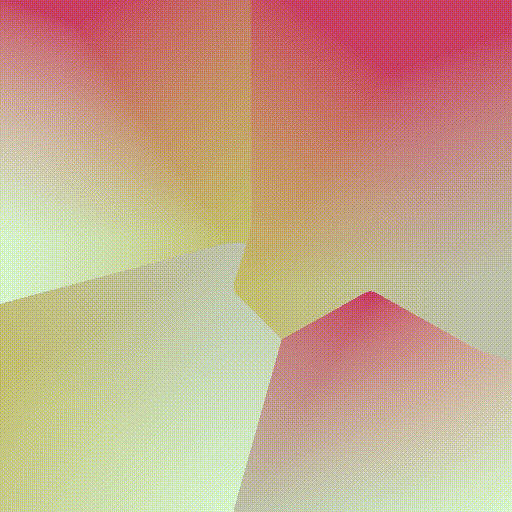
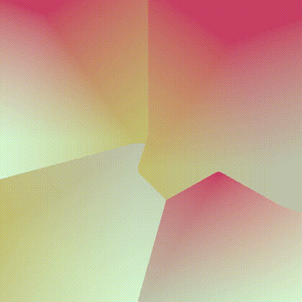

This setup was originally made as a small showcase for a student, but perhaps it is isefull to some of you. in this short description we create a procedural turntable render from generic models with corresponding textures using PDG. It is divided into 2 parts.
1) will cover how we can generate and export generic geometries and textures from Sop and Cop context with PDG.
2) will cover how we can make an PDG turntable animation without a dependency on framenumbers using Python
1.
Let's lay down a wedge sop that generates 6 workitems, containing an `@index` attribute with an integer value ranging from 0-5.
this attribute value will be used as an input for the platonic solids type. tip: In some nodes, we can use integers to drive ordered menu's.
next, we'll go to Sop level, we'll unwrap the platonic solid on each `@index`, and generate a random color on the points, also dependant on the `@index`.
now, let's bring that color information into Cops so we can export it as a texture. in COPS, we layout a VopCop2 generator with a small vex expression
The uvsample() function grabs information depending on the coordinates of the "uv" attribute on a geometry string. In this case, we can grab the "Cd" vector and rite it out as RGB values.
This is a technique I came across from Konstantin Magnus.
Now Houdini can save it out as a texture. We can lay down a ropgeometry and a ropcomposite node, each with the `@pdpg_index` attribute in the filename.
in part 2, we'll see how we can use Python and PDG to make a fully automated turntable . first we'll start by using a file pattern to determine the input folder. With the "*" symbol, we can define all* filenames and extensions. We than use a wedge Top to generate a `@geometry_index` attribute that has the same value as the `@pdg_index`. I just do this for clarification and name conventtions. I follow this wedge node up by another wedge Top. This time setting a rotation attribute from 0 to 360. we will use this later in our Python processor so we are not time dependant.
we now lay down a python porocessor with the following script:
this script generates a small node tree at Sop level that will be responsible for the rotation per `@wedgenum`. All parameters are defined in the script. We can now conclude this setup with a rop fetch and an output
this is the link to the PDG turntable houdini file
 
